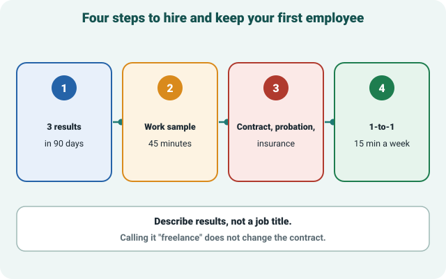

K9 · Leadership and developing others › Level 3 Secure
Hire and keep your first employees
This lesson completes Sheet 6: First-hire sheet and onboarding checklist. Print template. Delegating and following up are covered in Delegate and follow up (N5). This lesson is not legal advice. Its legal examples come from Vietnam; employment rules differ by country, so check the law where you hire. Sources are at the end.
1. Objectives
- Write a job description as 3 results in 90 days, with a work sample test.
- Complete an onboarding checklist: contract, probation, social insurance, workplace rules.
2. Retrieval warm-up
- What are the four questions for choosing a business form?
- Who is a beneficial owner?
Answers
- Liability; owners; raising capital; paperwork.
- The person who actually owns or controls the business.
Review: Legal basics for starting up.
3. Explanation
Your first hire shapes how the whole business works later. A wrong hire costs money and the founder's time.
Step 1. Describe the job as results. Do not just write "salesperson". Write 3 results the person must reach in 90 days. For example: "reply to every customer message within 30 minutes during office hours".
Step 2. Test with a short real task. A 30–60 minute task that looks like the real work says more than "What are your strengths?" Also ask about what they have done, as in the customer interviews in Lesson 1.
Step 3. Get the paperwork right.
Onboarding checklist (example: Vietnam)
- Written contractOnly contracts under 1 month may be oral, with some exceptions.
- The label does not decideWork, pay and supervision make it an employment contract.
- ProbationHas a maximum length; pay is at least 85% of the job's wage.
- Social insuranceCompulsory for contracts of 1 month or more.
- Workplace rulesFrom 10 employees: written rules, registered.
Calling someone a "freelancer" does not change the nature of the relationship. If there is work, pay and supervision, it is an employment contract. Many countries apply a similar test; check yours.
Step 4. Keep people. In small firms, good people often leave because they do not know whether they are doing well. Three simple habits:
- A 15-minute one-to-one every week for the first 3 months. Ask: what got in your way this week, what do you need from me.
- Pay on time, even when cash is tight. Use Sheet 4 to prepare in advance.
- Show a path forward: after 6–12 months, what more could they take on?

4. Workplace example
Hypothetical scenario (Vietnam). Quinn runs a workshop printing uniform T-shirts. He works alone, and orders are piling up.
He writes 3 results in 90 days for his first hire. One: send customers a quote the same day. Two: agree the design with the customer before printing. Three: no order delivered late because of missing information.
The work sample: read a customer message asking the price of 50 shirts, write a reply and a list of questions to ask. Candidate Holly misses little and asks the right questions about sizes and delivery date. He chooses Holly.
He signs a written employment contract, agrees a 30-day probation, paid at 100%. The main contract is for 12 months, and he registers Holly for social insurance.
Every Monday morning they meet for 15 minutes. In week three, Holly says customers often ask about prices again. He makes a standard price list. Repeat questions drop clearly.
Why this works: he hires on real work, not on gut feeling. The paperwork is right from the start. The one-to-one uncovers a problem he had not seen.
5. Practice
Hypothetical scenario. Una opens a small café and needs to hire a full-time barista.
Write 3 results for 90 days and a work sample test. Fill in the onboarding checklist.
Hint 1
A barista's results can be measured by serving time, consistent taste, and a clean counter.
Hint 2
Full-time, on a contract of several months: think about a written contract and compulsory social insurance.
Model answer
3 results in 90 days
- Drinks served within 5 minutes at peak times.
- The 10 main drinks made to the café's recipes, with no customer complaints about taste.
- The counter clean to the end-of-shift checklist, every day.
Work sample: make 3 drinks to the café's recipes in 20 minutes, then describe a time they handled a difficult customer.
Checklist (Vietnam): a written employment contract; probation within the legal limit, paid at least 85%; register for compulsory social insurance; with fewer than 10 staff, written workplace rules are not yet compulsory, but shift rules are still worth writing.
(The details are hypothetical.)
6. Self-check
Choose an answer. Every option has an explanation.
Question 1. Which line is a well-written 90-day result for a first salesperson?
-
Not quite. This describes personality. It cannot be measured.
-
Correct. Correct. It names a specific task and can be measured.
-
Not quite. This is a title. It does not say what doing well looks like.
Question 2. Someone works 8-hour shifts under your supervision. You call them a "freelancer" and sign nothing. Under Vietnamese law, which is true?
-
Not quite. The label does not decide. Work, pay and supervision make it an employment contract.
-
Correct. Correct. Under Article 13(1) of the Labour Code, the content counts, not the name.
-
Not quite. Paying in full does not replace the contract, insurance and other obligations.
Question 3. An employee signs a 12-month employment contract. Under Vietnamese law, which is true about social insurance?
-
Not quite. The size of the business does not remove this obligation.
-
Correct. Correct. Contracts of 1 month or more are covered under Social Insurance Law 41/2024/QH15.
-
Not quite. There is no such 6-month rule. Read the original text on when contributions start.
Question 4. Your first employee has been with you 2 months and is quiet. You do not know if they are happy. What should you do first?
-
Not quite. You do not yet know the problem. A pay rise may not address it.
-
Correct. Correct. Regular one-to-ones uncover problems early.
-
Not quite. Many people do not speak up. They leave before they do.
7. Reflection
- What result will your first hire deliver that you cannot deliver yourself?
- Have you ever hired someone because they "felt right"? How did it turn out?
8. Real-world application
In the next 7 days, complete Sheet 6 for the role you are about to fill. If you already have staff, check each person's contract and insurance against the checklist.
Last updated: 14/11/2026. Sources (example: Vietnam, checked 14/11/2026): Labour Code No. 45/2019/QH14, consolidated text 18/VBHN-VPQH of 12/02/2026. Article 13(1) (a contract under another name is still an employment contract if it has the required elements); Article 14 (form of contract); Articles 25–26 (probation length and pay); Articles 118–119 (workplace rules). A law amending the Labour Code was being debated by the 16th National Assembly (session of 09/11/2026). On the date checked, it had not been passed. Law on Social Insurance No. 41/2024/QH15, issued 29/6/2024, in force from 01/7/2025. Article 2(1)(a): people working under an employment contract of 1 month or more are covered compulsorily. A draft law amending the Social Insurance Law is also under debate. This lesson only summarises the main points. When applying them, read the latest consolidated text and ask an expert.
9. Metadata
| skill | K9 · Leadership and developing others |
|---|---|
| level | Level 3 · Secure |
| group | N7 |
| framework_map | EntreComp: Mobilising others; Working with others; WEF: Talent management; Leadership and social influence; SkillsFuture CCS: Developing People; NACE: Leadership; CSfW: 1b Work with roles, rights and protocols (reference only) |
| original | Vietnamese version |
| updated | 2026-11-14 |
Finish the lesson
Mark it as done and the site suggests reviews after 1, 3 and 7 days. The data stays on your device only.
Suggested reviews: